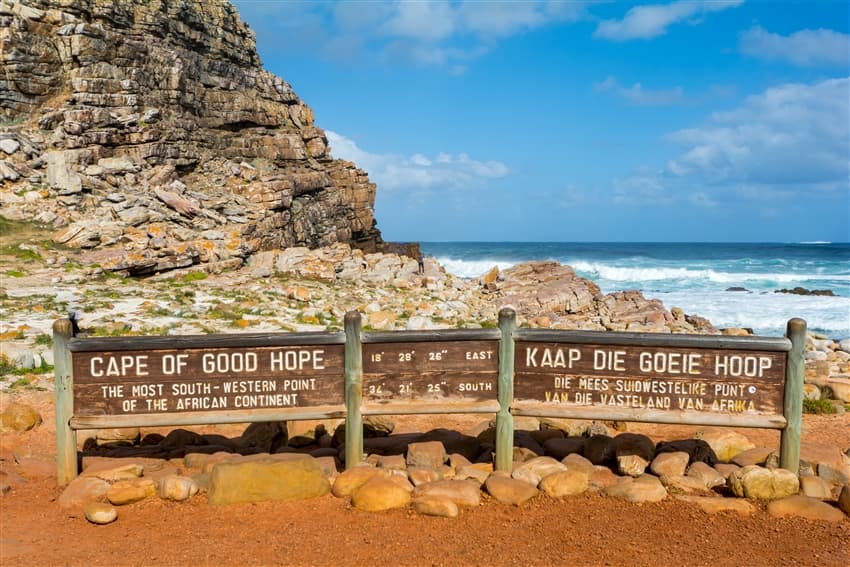

南非十日遊

📍 地點：南非
📅 天數：10天9夜
💰 價格：NT$ 115,900 起
行程內容
Day 1｜出發 → 開普敦
- 搭乘國際航班前往開普敦
- 抵達後專車接送至飯店休息
Day 2｜桌山纜車 & 市區觀光
- 搭乘桌山纜車俯瞰開普敦全景
- 參觀城市主要景點及海濱長廊
Day 3｜好望角保護區
- 前往好望角國家公園
- 拍攝壯麗海岸線與自然生態
Day 4｜克魯格國家公園
- 搭乘內陸航班前往克魯格國家公園
- 進行非洲野生動物遊獵
Day 5｜克魯格國家公園深度探索
- 全天在克魯格國家公園觀賞獅子、大象、犀牛及斑馬
- 學習野生動物生態與保育知識
Day 6｜人類搖籃遺址
- 參觀人類搖籃遺址（Cradle of Humankind）
- 探索古人類化石與歷史文化
Day 7｜開普敦自由行
- 回到開普敦，自由活動
- 可選擇參觀酒莊或當地市集
Day 8｜桌山與海岸小鎮
- 再次欣賞桌山與自然景觀
- 探訪海岸小鎮，享受海鮮料理
Day 9｜自由活動 & 購物
- 最後一天自由活動與購物
- 享受當地餐廳美食與紀念品採購
Day 10｜返回台灣
- 早餐後前往機場搭乘班機返回台灣
- 結束南非精彩之旅